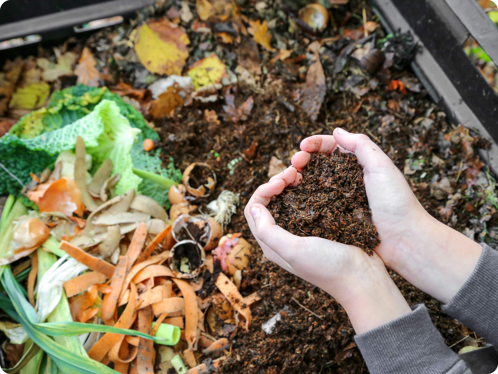

Últimos artículos del Blog
Cómo iniciar tu propio huerto urbano
Tener un huerto en casa es más fácil de lo que parece. Aprende paso a paso cómo empezar y qué necesitas para cultivar tus propios alimentos.

Viviendo sin residuos: Guía para principiantes
¿Quieres reducir tu impacto ambiental? Esta guía práctica te dará ideas y consejos para empezar un estilo de vida más sostenible y libre de residuos.

Beneficios del compostaje en casa
Conoce cómo transformar tus residuos orgánicos en abono natural y enriquecer tus plantas de forma ecológica.